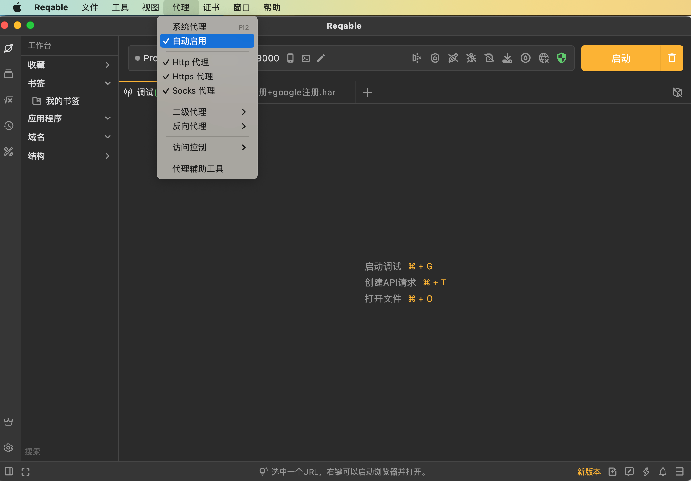
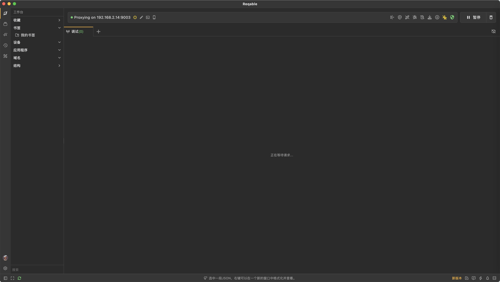
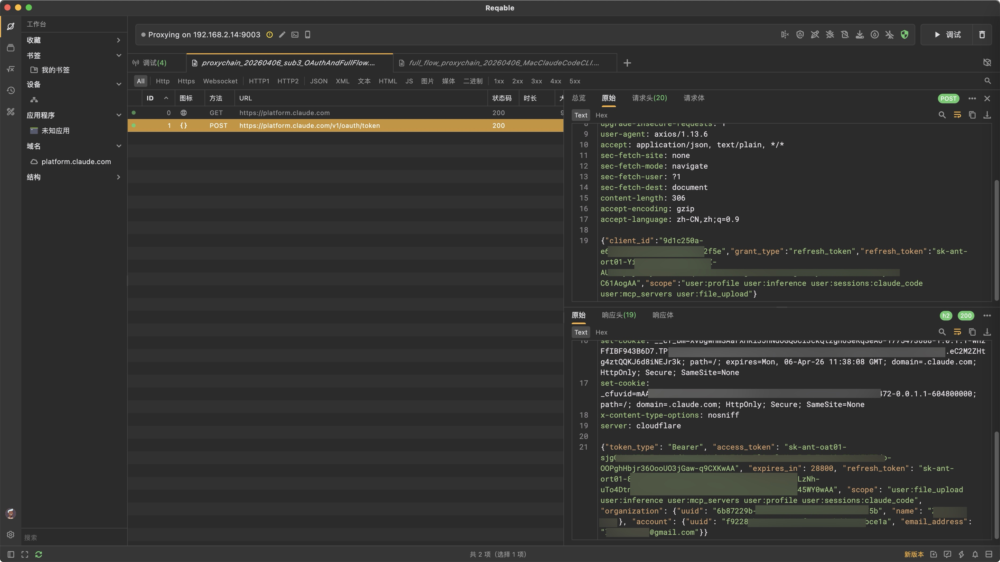
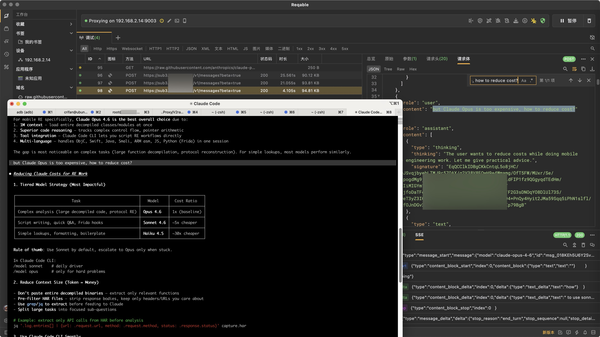
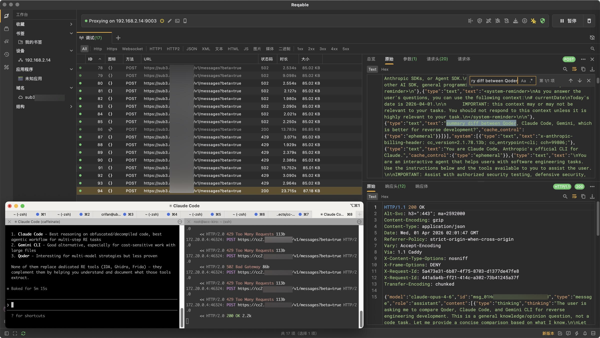

电脑开启代理
此处本身Reqable是抓包的工具，但是本身：也支持额外的本地代理
比如：
代理->http代理、https代理、Socks代理：开启对应的http、https、socks的代理代理->自动启动：Reqable启动时，就开启对应代理

就表示：此处（Mac/Win等）PC电脑端，就开启了对应（http、https、socks）的代理
典型的地址是：
- HTTP代理
http://127.0.0.1:9000- 也可以写成：
http://{YOUR_PC_IP}:9000- 举例，此处Mac的IP是：
192.168.3.137，就是：http://192.168.3.137:9000
- 举例，此处Mac的IP是：
- 端口号：
9000- 是本地默认的端口号，你也可以根据需要自己改动，比如：
9003等
- 是本地默认的端口号，你也可以根据需要自己改动，比如：
- 也可以写成：
用法举例
Mac中链式代理抓包Claude
之前某次，想要实现链式代理，去抓包Claude相关流量，对应的架构是：
- 完整链式代理抓包架构
┌─────────────────────────────────────────────────────────────────────────────────────┐
│ │
│ ┌─────────────┐ ┌──────────────┐ ┌───────────────────┐ ┌──────────┐ │
│ │ Claude Code │ ① │ │ ② │ │ ③ │ Claude │ │
│ │ CLI (Mac) │────→ │ Sub2API │────→ │ MITM Proxy │────→ │ Server │ │
│ │ │ │ (Docker) │ │ (sub3 宿主机) │ │(Official)│ │
│ └─────────────┘ └──────────────┘ └───────────────────┘ └──────────┘ │
│ │ │ │ │ │
│ │ Reqable │ HTTP Proxy │ upstream│ │
│ │ (Mac:9003) │ 172.17.0.1:8888 │ proxy │ │
│ │ │ │ ▼ │
│ │ │ │ ┌──────────────────┐ │
│ │ │ │ │ webshare- │ │
│ │ │ └─→│ yyyyyyyy-zz │──→ Claude │
│ │ │ │ (IP Proxy) │ Server │
│ │ │ └──────────────────┘ │
│ ▼ ▼ │
│ 抓包① 抓包② │
│ Mac侧流量 服务器侧流量 │
│ (CLI→Sub2API) (Sub2API→Claude) │
│ │
└─────────────────────────────────────────────────────────────────────────────────────┘
其中的：
- sub3服务器链式代理架构
┌──────────────────────────────────────────────────────────────────┐
│ sub3 Host │
│ │
│ ┌─────────────────────────────────┐ │
│ │ mitmproxy (宿主机) │ │
│ │ 监听: 0.0.0.0:8888 │ │
│ │ 模式: upstream proxy │ │
│ │ │ │
│ │ --mode upstream:http:// │ ┌────────────────────┐ │
│ │ PROXY_HOST:PROXY_PORT ────────────→│ webshare-yyyyyyy-zz│ │
│ │ --set upstream_auth= │ │ (外部 IP Proxy) │ │
│ │ USERNAME:PASSWORD │ │ │ │
│ │ │ │ ──────→ Claude │ │
│ │ --set hardump=xxx.har │ │ Server │ │
│ └────────────▲────────────────────┘ └────────────────────┘ │
│ │ │
│ │ 172.17.0.1:8888 │
│ │ │
│ ┌────────────┼────────────────────┐ │
│ │ Docker 容器 │ │ │
│ │ │ │ │
│ │ sub2api ──┘ │ │
│ │ (proxy_id 指向 mitmproxy) │ │
│ │ │ │
│ └─────────────────────────────────┘ │
└──────────────────────────────────────────────────────────────────┘
相关完整请求的链路：
请求完整链路:
Claude Code CLI (Mac)
│
│ HTTPS_PROXY=http://127.0.0.1:9003
▼
Reqable (Mac, port 9003) ← 抓包①: CLI↔Sub2API 的流量
│
│ ANTHROPIC_BASE_URL=https://sub3.yyy.zzz
▼
Sub2API (Docker, sub3 服务器)
│
│ transport.Proxy = http://172.17.0.1:8888 (proxy_id=123, mitmproxy-capture)
▼
mitmproxy (sub3 宿主机, port 8888) ← 抓包②: Sub2API↔Claude 的流量
│
│ --mode upstream:http://PROXY_HOST:PROXY_PORT (webshare-yyyyyy-zz)
▼
webshare-yyyyyy-zz (IP Proxy) ← 链式代理新增环节
│
▼
Claude Server (platform.claude.com / sub3.yyy.zzz)
以及开始抓包的阶段：
├──────────────────────────────────────────────────────────────────┤
│ 抓包阶段 │
├──────────────────────────────────────────────────────────────────┤
│ □ 4. sub3: 启动 mitmproxy │
│ ssh root@11.22.33.44 │
│ mitmdump -p 8888 --ssl-insecure \ │
│ --set hardump=/root/captures/full_flow.har │
│ │
│ □ 5. Mac: 启动 Reqable，监听 9003 端口 │
│ → 开始录制 │
│ │
│ □ 6. Mac: 配置 Claude Code CLI 使用 sub3 + Reqable 代理 │
│ export HTTPS_PROXY=http://127.0.0.1:9003 │
│ export ANTHROPIC_BASE_URL=https://sub3.yyy.zzz |
│ export ANTHROPIC_API_KEY=sk-0b999cd4... │
│ │
│ □ 7. 运行 Claude Code CLI，发起请求 │
│ │
│ □ 8. 停止抓包，收集 HAR 文件 │
│ - Mac Reqable: 导出 HAR (抓包 ①) │
│ - sub3: pkill -SIGINT mitmdump (抓包 ②) │
└──────────────────────────────────────────────────────────────────┘
-》其中的：
Reqable (Mac:9003) == HTTPS_PROXY=http://127.0.0.1:9003：指的就是：Mac本地的Reqable的代理
-》对应的Reqable的配置是：

后续去抓包时，启动Claude的CLI：
NODE_TLS_REJECT_UNAUTHORIZED=0 HTTP_PROXY=http://192.168.2.14:9003 HTTPS_PROXY=http://192.168.2.14:9003 claude
相关Reqable抓包效果是：


